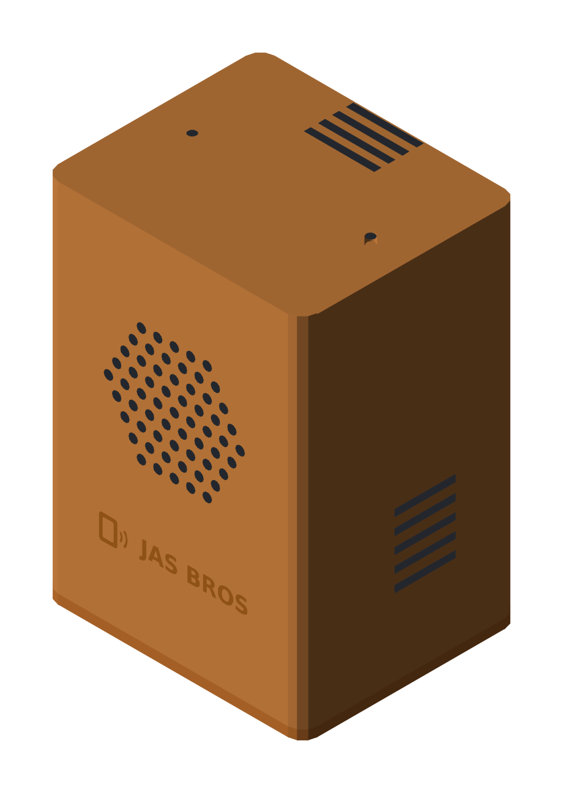
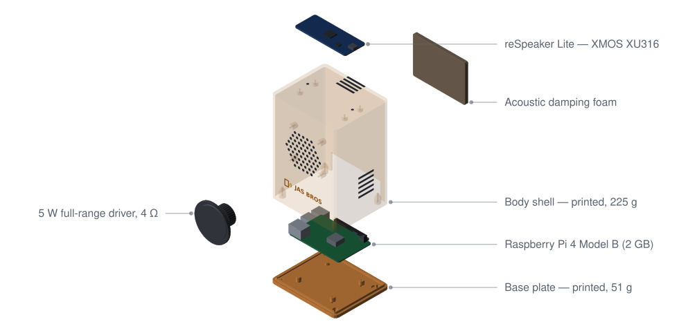
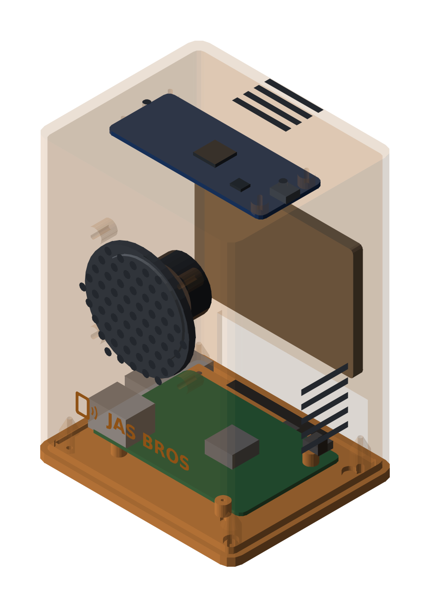

What a Smart Speaker Actually Costs

The parts for this speaker cost $113. That's the computer, the microphone array, the driver, the case, the screws, the foam, and the box it all ships in.
We're about to ask people for money, so here's the whole list first, and then the math that turns it into a price.
The box everything goes in
Every part on the list has to fit somewhere, so we drew the case before we trusted the prices. It's two printed pieces, a shell and a base plate, and everything bolts into those.

The base plate holds the Pi on four standoffs. The driver bolts to the inside of the front panel, behind the grille. A foam pad sits against the back wall, and the reSpeaker board hangs from the ceiling so its two mics line up with the two holes in the top.

It's 110 × 92 × 152 mm with 2.8 mm walls. About 225 g of filament for the shell, 51 g for the base plate. Both parts fit on one Bambu P1S plate with room left over.
Two things about the design are printing decisions rather than styling ones.
The grille is sixty-one 4 mm holes instead of one 52 mm opening. A hole that big in a vertical wall sags at the top of the arc. Lots of small holes move the same air, and every one of them bridges cleanly.
The shell prints upside down, top face on the bed. Print it the other way up and that top face has to bridge the whole 104 × 86 mm cavity, which won't come out well on any printer.
- smart-speaker-enclosure.3mf — both parts, print-oriented, on one plate
- body shell STL · base plate STL
One real caveat: we haven't printed this yet. It's drawn, checked and exported, but nothing has been test-fitted against an actual board. The clearances come from published dimensions, not from parts on a bench. When we print one, whatever's wrong with it goes in the next post.
The list
| Category | Component | Qty | Unit | Ext. |
|---|---|---|---|---|
| Compute | Raspberry Pi 4 Model B (2GB) | 1 | $45.00 | $45.00 |
| Compute | microSD card 16GB (A1) | 1 | $5.50 | $5.50 |
| Compute | USB-C PSU (5V/3A) | 1 | $6.00 | $6.00 |
| Compute | Passive heatsink set | 1 | $2.00 | $2.00 |
| Audio capture | reSpeaker Lite (XMOS XU316) | 1 | $24.90 | $24.90 |
| Audio capture | USB-C cable (short) | 1 | $3.50 | $3.50 |
| Audio output | 5W full-range driver, 4Ω | 1 | $7.00 | $7.00 |
| Audio output | JST-PH 2-pin speaker pigtail | 1 | $0.75 | $0.75 |
| Cables | Board mounting hardware | 1 | $2.00 | $2.00 |
| Cables | Internal wiring kit | 1 | $1.50 | $1.50 |
| Enclosure | 3D-printed shell | 1 | $9.00 | $9.00 |
| Enclosure | Acoustic damping foam | 1 | $2.00 | $2.00 |
| Enclosure | M2.5 fastener set | 1 | $1.00 | $1.00 |
| Packaging | Kit box + foam insert | 1 | $2.50 | $2.50 |
| Packaging | Quick-start card | 1 | $0.35 | $0.35 |
| Total | $113.00 |
Single-unit prices, August 2026, from Seeed and the usual distributors. At a thousand units most of these drop 25–40%, especially the Pi. We're not counting on that yet.
Why there's a real mic array in here
The cheap way to do this is two bare microphones wired straight to the Pi. We're not doing that.
The box talks while it's listening. You say "Hey Claude," it starts answering, and you want to be able to cut it off, which means the mics are live while a speaker eighteen inches away is playing. Without echo cancellation the box hears itself. The wake word fires on its own voice, and Whisper ends up transcribing the answer it just gave.
You can do echo cancellation in software, on the Pi, competing with Whisper for cycles. Or you can buy a board with a chip that already does it. For about fifteen dollars over a bare codec, we bought the chip.
We priced the whole shelf while we were at it:
| Board | Price | Hardware DSP | Mics / range |
|---|---|---|---|
| reSpeaker Lite (XU316) | $24.90 | Echo cancellation, interference cancellation, noise suppression, AGC. No beamforming. | 2 mics, 3 m |
| reSpeaker XVF3800 (no XIAO) | ~$50–61 | All of the above plus multi-beamforming, de-reverberation, direction of arrival | 4 mics, 5 m |
| reSpeaker Mic Array v2.0 (XVF3000) | $64.00 | Echo cancellation, beamforming, direction of arrival, noise suppression | 4 mics, 5 m |
| reSpeaker 4-Mic Array HAT (AC108) | $24.90 | None. It's a codec. | 4 mics |
We went with the reSpeaker Lite at $24.90. It handles echo cancellation, noise suppression and gain control in hardware, and it has a 5 W speaker connector and a 3.5 mm output on board. So it's the mic array, the DAC and the amplifier all at once, which is why there's no separate amp anywhere on the parts list.
What it can't do is beamforming. The four-mic boards steer toward whoever is talking; the Lite has two mics and just listens. Its range is 3 meters against 5.
For a box sitting on a shelf we think that's enough. We think. In a kitchen with the dishwasher running it might not be, and if the room test says so we move up to the XVF3800 and the kit price goes from $249 to $309.
A few other calls
A 2 GB Pi rather than a 4 GB one. Whisper runs on the device, so the model has to
fit in memory alongside the OS. Quantized base.en should sit inside 2 GB. If it
turns out it doesn't, it's a 4 GB board and ten dollars more.
One driver instead of two, because it's a box that answers questions and there's nothing to put in a second channel.
No fan. A fan two inches from a microphone isn't a saving, it's a bug. Passive heatsink, nothing moving.
And it ships as a kit: parts, a printed shell and instructions, not a sealed box with a warranty sticker. That's worth about $34 a unit, and it suits the people who'd want one of these anyway.
The part we won't cut
You could build this for forty dollars. Swap the Pi 4 for a Zero 2 W, stop doing speech recognition on the device, and stream the microphone audio to a server instead. Then you need almost no memory, almost no processor, and no heatsink.
You'd also be shipping a microphone that sends your living room to somebody else's computer, which is the thing this box exists not to be. The wake word runs here. Whisper runs here. Exactly one step in the loop leaves the house, and only after you've said the words out loud on purpose.
That promise has a bill of materials. It's the difference between a $45 computer and a $15 one, and it's most of the reason this costs what it costs. We'd rather explain that number than not have to.
Turning $113 into a price
Parts aren't the whole cost. Packing one kit into one box takes about $8 of somebody's time, so a kit costs us $121.
We want a 50% gross margin, which just means the price is twice what the thing costs us:
| Kit | Assembled | |
|---|---|---|
| BOM | $113.00 | $113.00 |
| Finished shell + retail box | — | $9.00 |
| Assembly, flash, bench test | — | $25.00 |
| Pick & pack | $8.00 | $8.00 |
| Cost per unit | $121.00 | $155.00 |
| Price | $249 | $319 |
| Gross margin | 51.4% | 51.4% |
Early backers get the kit at $219, a 44.7% margin. That tier is thinner on purpose. It's what going first is worth.
What 50% doesn't cover
Half the price isn't half in our pocket. Out of the $128 of gross profit on a $249 kit:
- Kickstarter and card processing take about 8.5%, or $21.17.
- A 5% failure reserve, $12.45. Units die in the mail, boards arrive dead, people need help. Not budgeting for that is how a campaign turns into a year of unpaid support work.
- Shipping gets collected separately and passed straight through. It isn't margin and we won't pretend it is.
That leaves about $94 a kit, or 37.9%. That's the number we actually watch.
Not in any of this: certification, tooling, and our own hours. FCC and CE testing costs real money for anything with a radio in it, and we haven't priced it yet. When we do, it goes in the table like everything else.
At $12,000 of fixed costs and a mix of roughly 70% kits, we break even somewhere around 118 units. A little under $32,000 in pledges.
The spreadsheet
Both tabs, every formula live, so changing a quantity or a price moves the
margins and the break-even with it. There's a mic array selector on the BOM tab:
type Lite, XVF3800, v2.0 or HAT into one orange cell and the whole model
re-prices around that board. That's the cell we expect to argue about.
- smart-speaker-bom.xlsx — BOM and pricing model
- smart-speaker-bom.csv — just the parts list
If a number in here is wrong we'd like to know. Several are catalog estimates rather than quotes, and anybody who has actually bought three hundred speaker drivers knows something we don't.